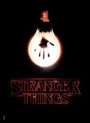

Чернобыль (мини-сериал)
«Черно́быль» (англ. Chernobyl) — телевизионный мини-сериал в жанре исторической драмы, созданный американским телеканалом HBO совместно с британской телесетью Sky. «Чернобыль» состоит из пяти серий, посвящённых аварии на Чернобыльской АЭС в 1986 году, ликвидации последствий этой аварии и расследованию её причин.

Очень странные дела
«О́чень стра́нные дела́» (англ. Stranger Things) — американский научно-фантастический сериал.Действие сериала разворачивается в 1980-х годах в вымышленном городе Хоукинс, штат Индиана. Первый сезон сериала рассказывает о событиях, произошедших в ноябре 1983 года: из секретной правительственной лаборатории сбегает девочка, обладающая телекинезом.
Чёрное зеркало
«Чёрное зе́ркало» (англ. Black Mirror) — британский научно-фантастический телесериал-антология, созданный Чарли Брукером. Лейтмотив сериала — влияние информационных технологий на человеческие отношения. Каждая серия не связана с предыдущими ни сюжетом, ни актёрами, ни временем и ни местом повествования. По словам Брукера, все сюжеты объединяет лишь сатира на тот образ жизни, что распространён в современном обществе.